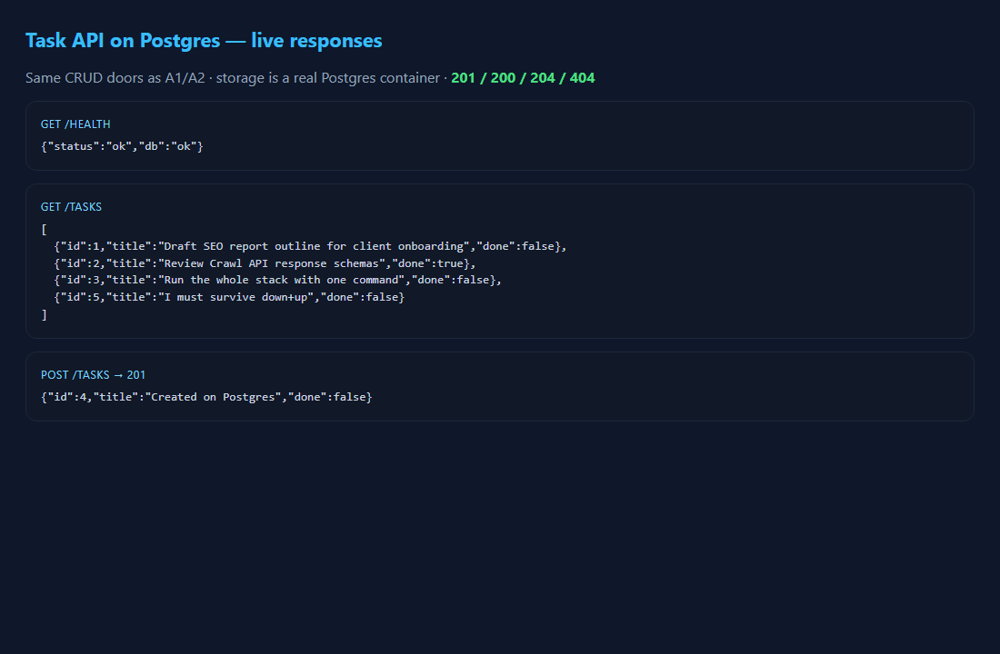

A3 · Docker Compose · Postgres
Containerized API
One-command stack: API + Postgres in containers so a stranger can run the same box. Routes stay familiar; storage moves to a real database server.

Surface
| Method | Path | Meaning |
|---|---|---|
GET | /health | Container liveness |
GET | /tasks | Postgres-backed list |
POST | /tasks | Create in container DB |
compose | up | One-command bring-up |